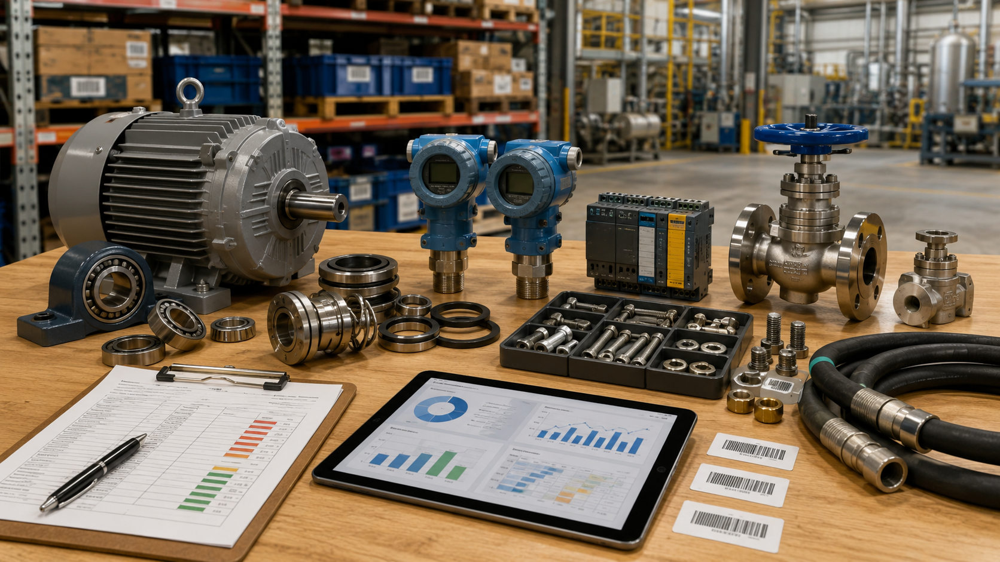

Visão de Criticidade
Distribuição por Classe A/B/C
Histograma do Score
Top 15 Materiais Críticos
Risco Operacional e Análise de Demanda
Lead Time × Cobertura de Estoque
Pontos acima da linha tracejada (y = x) representam itens em risco iminente de stockout.Custo de Parada × Score
Materiais no quadrante superior direito combinam alto custo de parada e alto score de criticidade.Valor Anual Consumido por Categoria
Risco de Ruptura por Categoria
Percentual de itens em risco de desabastecimento (Lead Time > Cobertura) por categoria.Top Materiais Críticos e Ações Recomendadas
Listagem ordenada por score decrescente, destacando classe, cobertura e ações de controle de inventário.
| Código | Descrição do Material | Categoria | Equipamento | Fornecedor | Lead Time (d) | Cobertura (d) | Custo Parada (R$/h) | Score | Classe | Ação Recomendada |
|---|
Metodologia de Priorização
1. Dados Sintéticos
Mapeamento de 1000 materiais MRO de planta de fertilizantes, com distribuições plausíveis de lead time, de custos e de consumo de estoque.
2. Normalização
Ajuste linear das variáveis explicativas na escala intervalar [0, 1] via MinMax, garantindo neutralidade de grandezas físicas.
3. Score Ponderado
Fórmula analítica ponderando: Engenharia (35%), Custo de Parada (25%), Lead Time (20%), Risco Substituição (10%) e Risco Stockout (10%).
4. Classificação ABC
Estratificação objetiva baseada no score calculado: Classe A representa o top 15%, Classe B os próximos 30% e Classe C os demais.
5. Ações de Inventário
Regras lógicas que cruzam cobertura, ponto de pedido mínimo e risco para sugerir planos de ação sob medida e viáveis.
Limitações do Modelo
- Simulação de Dados: O projeto utiliza dados sintéticos para simulação MRO e não expõe dados confidenciáveis corporativos.
- Score Estático: O score representa pesos de negócio iniciais e deve ser calibrado com especialistas da planta de produção.
- Suporte à Decisão: As recomendações servem como ferramenta de triagem e não substituem o parecer técnico da engenharia.
Próximas Fases
- Integrar dados de falhas de equipamentos (MTBF e MTTR) para modelagem RCM dinâmica.
- Desenvolver previsões probabilísticas de estoque mínimo com algoritmos preditivos de demanda.
- Adicionar funcionalidade de ajuste dinâmico de pesos da criticidade diretamente pelo painel.